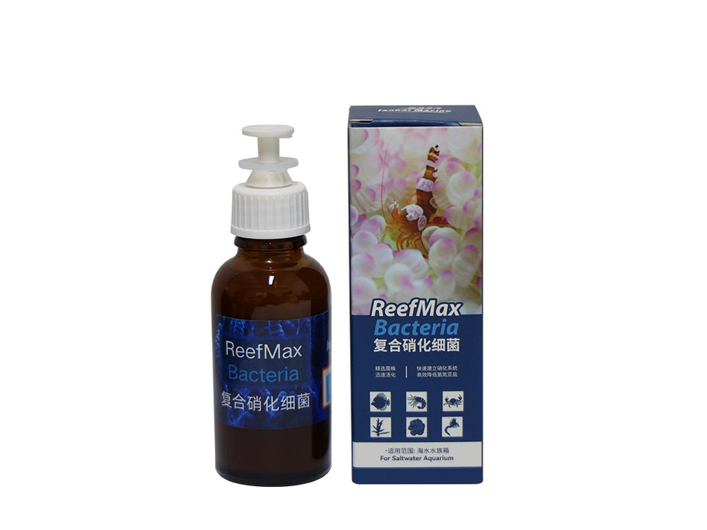

水质管理Water Care
ReefMax 复合硝化细菌ReefMax Nitrifying Bacteria
净含量 30mlNet 30 ml
保质期 1 年Shelf Life 1 Year
2-5℃ 冷藏Store at 2–5℃
专为海水鱼缸设计，精选高效菌株，不含化学药剂，对生物无刺激。高效分解残饵、粪便等有机碎屑，有效降低水体富营养化与混浊度，迅速降低水中氨氮和亚硝酸盐，帮助快速建立稳定的硝化系统。 Formulated for saltwater aquariums with selected high-efficiency bacterial strains — chemical-free and non-irritating to livestock. Efficiently breaks down leftover food and organic detritus, reduces eutrophication and turbidity, and rapidly lowers ammonia and nitrite to establish a stable nitrifying system.
使用说明 / 贮藏 / 注意事项Instructions / Storage / Precautions
使用说明Instructions
开缸使用：每 100 升水体添加 5 毫升；
日常维护：每 100 升水体添加 2 毫升，每 1~2 周添加一次。
日常维护：每 100 升水体添加 2 毫升，每 1~2 周添加一次。
Startup: add 5 ml per 100 L of water.
Routine maintenance: add 2 ml per 100 L every 1–2 weeks.
Routine maintenance: add 2 ml per 100 L every 1–2 weeks.
贮藏方式Storage
内含活菌制剂，需置于 2℃~5℃ 冷藏密封保存；开封后请在 180 天内使用完毕。
Contains live bacteria — keep sealed and refrigerated at 2–5℃. Use within 180 days after opening.
注意事项Precautions
请存放在儿童和宠物无法触及的地方。
Keep out of reach of children and pets.